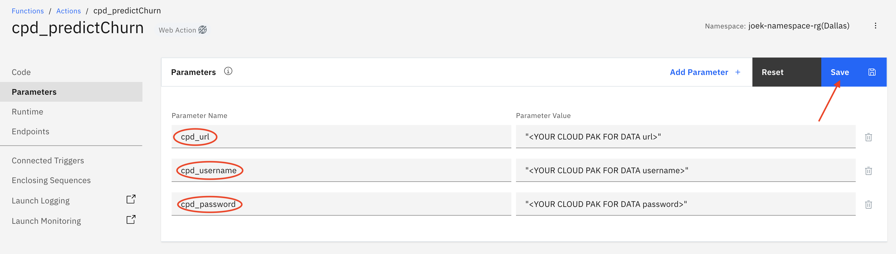
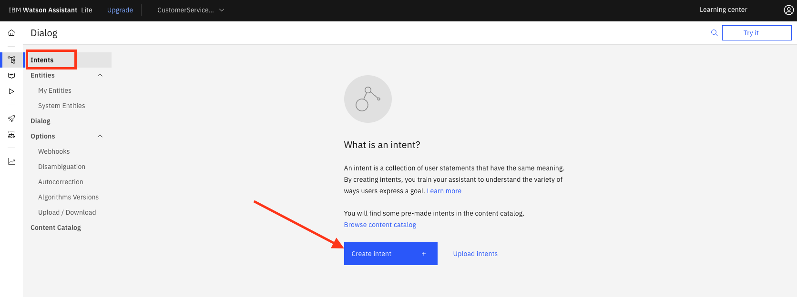
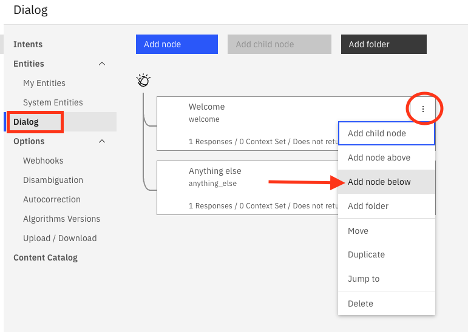
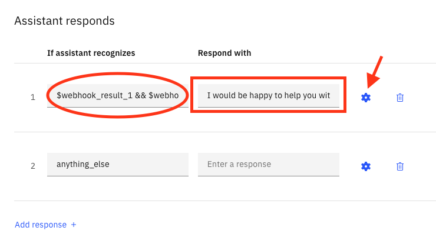

Virtual Assistant Demo
Warning
This lab is pending an update, as deprecated features are being used. However, it can give you an idea on how the model can be consumed in a real use case.
This lab highlights one scenario to illustrate how AI models can be infused into an application to improve customer interaction. Specifically, you will learn to develop a solution for Personalizing Customer Experience by infusing the churn prediction AI model in your Virtual Assistant. In the previous sections of the workshop, you have learned how to leverage Cloud Pak for Data to execute the following tasks:
-
Access data from different sources.
-
Catalog and apply enterprise governance to that data.
-
Train AI models using Jupyter notebooks and AutoAI capabilities.
-
Deploy trained AI models to preProd (or QA) deployment spaces for validation.
-
Validate AI model for fairness, quality, and drift using Watson OpenScale.
-
Once model validation is approved, automate CI/CD process to push models from UAT (Pre-Prod) deployment spaces to Prod deployment spaces.
-
Monitor AI models in production using Watson OpenScale for accuracy, drift, bias, and explainability to deliver trusted AI.
Info
As a quick reminder, the business use case involves improving the customer experience by offering a personalized interaction from the virtual agent based on the likelihood of a customer to churn.
Pre-Requisites
Watson Assistant is offered as a cartridge on Cloud Pak for Data as well as it is offered as a managed service on IBM Cloud. The lab teaches how to infuse the trained AI model for churn prediction in a Virtual Assistant designed with Watson Assistant on IBM Public Cloud.
To complete the lab, you will need to setup and access an IBM Public Cloud account.
Cloud Functions Wrapper
In this section, we will create an IBM Cloud Functions wrapper to the model we trained and deployed in the previous sections. IBM Cloud Functions is IBM’s Function as a Service (FaaS) cloud computing service that allows you to execute code in response to events without dealing with the complexity of setting up the required infrastructure.
-
Log into your IBM Cloud account by navigating to https://cloud.ibm.com and providing your log-in credentials. If you don’t have an IBM Cloud account, use the links on the landing page to create a free IBM Cloud account.
-
Logged into your IBM Cloud account, navigate to the IBM Cloud Menu and select Functions.
-
On the IBM Cloud Functions page, click on Start Creating.
-
Click Create Action. Alternatively, you can also click Actions in the left navigation column and then click Create on the Action page that loads.
-
On the Create Action page, provide a name for your Cloud Functions action, select “Python 3.7” for the Runtime and click Create.
Tip
Note that you can create the action using a different Runtime but in this lab we’re using Python 3.
-
Replace the contents of the Code section of the action with the code shown below.
IMPORTANT
Use the copy button in the code snippet below to keep the right format of the content when pasting.
# # # main() will be run when you invoke this action # # @param Cloud Functions actions accept a single parameter, which must be a JSON object. # # @return The output of this action, which must be a JSON object. # # import sys import requests, json import ast def getToken(cpd_url,cpd_username,cpd_password): url = cpd_url + '/v1/preauth/validateAuth' #print("get token url: ", url) response = requests.get(url,auth=(cpd_username,cpd_password),verify=False) #print("response: ", response) wml_token = response.json()["accessToken"] #print("token: ", wml_token) return wml_token def predictChurn(wml_token,scoring_url,flds,vals): header = {'Content-Type': 'application/json', 'Authorization': 'Bearer ' + wml_token} payload_scoring = {"input_data": [{"fields": flds, "values": vals}]} response_scoring = requests.post(scoring_url, json=payload_scoring, headers=header, verify=False) churn = json.loads(response_scoring.text) return churn def getProb(prediction): pred = prediction['predictions'][0]['values'][0][-1] if pred == 'T': prob = prediction['predictions'][0]['values'][0][1][1] else: prob = prediction['predictions'][0]['values'][0][1][0] return prob def main(dict): cpd_url = dict['cpd_url'] cpd_username = dict['cpd_username'] cpd_password = dict['cpd_password'] try: scoring_url = dict['scoring_url'] flds_array = ast.literal_eval(dict['fields']) vals_array = ast.literal_eval(dict['values']) except: print("error") response = {"error": "not all required parameters are provided. Please make sure you pass the scoring_url, fields, and values parameters"} return response wml_token = getToken(cpd_url,cpd_username,cpd_password) churn_prediction = predictChurn(wml_token,scoring_url,flds_array,vals_array) #print("churn prediction: ", churn_prediction) predlabel = churn_prediction['predictions'][0]['values'][0][0] print("predlabel: ", predlabel) predprob = getProb(churn_prediction) print("predprob: ", predprob) response = {"label": predlabel, "prob":predprob} return responseAfter you paste the code, click Save.
Info
Feel free to review the simple code to understand what it does. It gets a token from IBM Cloud Pak for Data using the username and password credentials that you provided and then makes a call to the deployed machine learning model using that token to predict churn.
-
Next, click on Parameters in the left column and click Add Parameter to provide required parameters to pass to the code. Specifically, this is where you can specify authentication information like Cloud Pak for Data URL, Cloud Pak for Data username, and Cloud Pak for Data password. For this action, we need three parameters:
- cpd_url
- cpd_username
- cpd_password
Info
You should have these values from the previous sections in this workshop. The cpd_url is the url you used to access Cloud Pak for Data landing page. The cpd_username and cpd_password are the username and password you used to log into Cloud Pak for Data.
IMPORTANT
Please make sure to include double quotes "" when providing the values for the parameters.
Click Save after providing the parameters.

-
Next, click back on Code (in the left navigation column) and test the action by clicking on Invoke with Parameters and provide the following values in the Change Action Input window. If you don't see the Invoke with Parameters option, press Save.
-
scoring_url This would be the REST endpoint from the deployed machine learning model you trained in the previous section. If you don’t have the scoring_url for your deployed model, you can get it by logging into your Cloud Pak for Data instance, navigating to Menu Deployments, selecting the deployment space, and clicking on the specific deployment. On that page, you copy the Endpoint value as that will be your scoring_url.
-
fields The array of fields used needed for scoring the model to obtain likelihood of a user to churn.
-
values The array of values corresponding to the field
The parameters you pass to your cloud function have the following format:
{ "scoring_url":"<YOUR_DEPLOYED_WML_MODEL_SCORING_ENDPOINT>", "fields":"['ID', 'LONGDISTANCE', 'INTERNATIONAL', 'LOCAL', 'DROPPED', 'PAYMETHOD','LOCALBILLTYPE', 'LONGDISTANCEBILLTYPE', 'USAGE', 'RATEPLAN', 'GENDER', 'STATUS','CHILDREN', 'ESTINCOME', 'CAROWNER', 'AGE']", "values":"[[1,27,6,33,1,'CC','Budget','Standard',400,3,'M','S',3,46000,'Y',38]]" }Click Apply.
-
-
Click Invoke and the action will run and returns the results which is the prediction and associated probabilities for the predicted value. Please note that the acutal value you get back may be different depending on what input values you provided.
-
Next enable your cloud functions action as a web action to handles HTTP events. Click on Endpoints in the left column (annotated with red rectangle in figure below), then check the Enable as Web Action checkbox (annotated with red arrow in figure below) and click Save (annotated with red oval in figure below). Copy the URL (annotated with red arrow in figure below) as that will be needed to call this web action in subsequent steps of this lab. The url will have the following form:
https://eu-de.functions.cloud.ibm.com/api/v1/web/<your_ibm_id>_<space>/default/<action_name>

Watson Assistant Setup
In this section, we will use Watson Assistant service to create an assistant and associate it with a dialog skill. We will integrate the dialog skill with the Cloud Functions action via the Assistant’s webhook capability to personalize the user experience and respond to each user differently depending on the likelihood of that user churning.
-
Logged into your IBM Cloud account, navigate to your Watson Assistant service and launch it. If you don’t have a Watson Assistant service, click on Catalog (annotated with red oval in figure below) and select AI / Machine Learning from left navigation column (annotated with red rectangle in figure below) and then select Watson Assistant. Alternatively, you can type ‘Watson Assistant’ in the search bar (annotated with red arrow) and then select the Watson Asssistant services under Catalog Results.
-
On the Watson Assistant page, select the Trial plan and click Create. You can optionally provide a name for your Watson Assistant service. Please note you can only have one Watson Assistant service with the Trial (or Lite) plan so if you have created one already please use that one. Once the service is created, click Launch Watson Assistant button.
-
On the IBM Watson Assistant wizard, provide a name for your assistant and a description (optional) and click Next.
-
Fill the form with the following information, then click Next.
- Web
- N/A
- Developer
- I want to provide confident answers to common questions
-
Choose your favorite accent color then click Next.
-
Click Create
Info
An assistant can handle Actions/dialog and/or search skills.
-
Actions/dialog skill uses natural language processing and machine learning technologies to understand user requests and respond appropriately based on specific responses you’ve created in the dialog. A dialog skill is ideal for handling FAQ-style requests. The Actions skill lets you have an assistant ready to chat quickly by composing step-by-step flows for a range of simple to complex conversations.
-
A search skill helps in answering complex (long-tail) questions by finding relevant information in enterprise data sources. It leverages Watson Discovery for collecting, enriching and indexing the enterprise data sources.
-
-
In this lab, we will work with the Dialog skill. In order to activate it, go to the Settings tab in the left-side menu and click Activate dialog
-
Next, we’ll add a new intent: #activate_device. The scenario we’re addressing is that of a user interacting with the chatbot to request activation of a new phone. Then depending on the churn likelihood of that user, the dialog will reflect different interactions. For users with high churn probability, the chatbot will connect them directly to an agent for a better experience. On the other hand, users with low churn probability, the chatbot will step them through the activation process directly. Note that for your use case, you can include other factors in deciding how to offer best experience for a user but in this lab, we would like to illustrate how to integrate the assistant with a trained machine learning model to offer a more personalized user experience.
Click on Intents in the left navigation column and click Create intent.

Tip
Note that you can also import intents directly from a csv file as explained in the Creating intents section in the documentation.
-
Provide a name for your intent, #activate_device, and click Create intent.
-
Next, we need to provide some sample utterances that indicate this new intent. Add the following examples one by one under the User example field:
- can you help me activate my new device
- how can I activate my new phone
- I bought a new phone and would like to make it active with my number
- I would like to activate my device
- what do I need to do to map my number to my new phone
Tip
Note that as you add more examples, Watson Assistant starts training. You can view that by clicking the Try it button.
-
Next we need to update the dialog flow to handle device activation requests. Click on the back arrow (annotated with red rectangle in figure above; to the left of the intent name), then select Dialog in the left navigation column (annotated with red rectangle in figure below). Click the Menu on the "Welcome" node (three vertical dots annotated with red oval in figure below) and select Add node below (annotated with red arrow in figure below).

-
On the node window, provide a name for the node (for example, “activate device”, annotated with red arrow in figure below), specify the condition under “If assistant recognizes” as #activate_device intent and add a response “Happy to help you with that”. Once you’ve added these, click the Try it button (if not open already) and test it by typing “I would like to activate my device”. Note the response from the Assistant “happy to help you with that”.
-
Next, create a new node following the same procedure to transfer the client to an agent. For demo purposes, we'd just simulate that the client is being transferred. In a real-life scenario, we would call the integration with the Call Center to call an agent.
-
Let's enable webhooks and connect the dialog node we just created to the web action we created in the previous section using IBM Cloud Functions. Click on Options in the left navigation column and then select Webhooks (annotated with red oval). In the URL field, provide the url you copied from the action Endpoint in IBM Cloud Functions (annotated with red rectangle in figure below). It will have the following:
https://es-de.functions.cloud.ibm.com/api/v1/web/<your_ibm_id>_<space>/default/<action_name>
IMPORTANT
Note that you should append a .json to the end of that url or else you will get an error in assistant. For example, the url could be:
https://es-de.functions.appdomain.cloud/api/v1/web/deb04933-f915-4141-a54b-ae5816c288a0/default/cpd_predictChurn.json
-
After adding the URL in Webhook setup page, click back on the Dialog tab in left navigation column (annotated with red arrow in figure below) then select the “activate device” node and click Customize.
-
On the Customize “activate device” page, turn Webhooks on by moving the slider from Off to On and click Apply.
Tip
You can safely ignore the warning about the webhook URL not being configured.
-
Once the Webhooks are turned On for this node, the “activate device” node gets updated to reflect the Parameters that can be provided to the webhook url. If you remember in the previous section, the cpd_predictChurn action required the following 3 parameters:
- scoring_url
- fields
- values
Specify these parameters in the “activate device” node. The scoring_url is the endpoint for the deployed machine learning model. The fields is the list of features to pass to the model for predicting likelihood of churn. The values is the array of values for the fields specific to the user.
IMPORTANT
Remember to include double quotes "" for the parameter values.
- scoring_url: "#########"
- fields:"['ID', 'LONGDISTANCE', 'INTERNATIONAL', 'LOCAL', 'DROPPED', 'PAYMETHOD', 'LOCALBILLTYPE', 'LONGDISTANCEBILLTYPE', 'USAGE', 'RATEPLAN', 'GENDER', 'STATUS', 'CHILDREN', 'ESTINCOME', 'CAROWNER', 'AGE']"
- values: $user_vals
The figure below shows how the parameters should be defined (annotated with red rectangles). To add new parameters, you click the Add parameter (annotated with red oval in figure below). Note that the values parameter is defined as a context variable which would be different for different end users. The actual field values can be obtained from a backend system when a user authenticates into the system and initiates the chatbot interaction. For purposes of this lab, we emulate this behavior by setting the context variable ($user_vals) directly using the “Manage Context” functionality in the “Try it” panel. In a production environment, this context variable would be set by a back end system once the user is authenticated.
Info
Now that we’ve integrated the webhook in the “activate device” node, we edit the response to handle the results from the cloud function indicating likelihood of user to churn. If the prediction likelihood returns False (‘F’), the virtual assistant will help the user with device activation process. If the prediction likelihood return True (‘T’), on the other hand, the virtual assistant will transfer the user to a human agent to guarantee best experience for the user.
-
Scroll down in the “activate device” node to the “Assistant responds” section and add the following condition and response:
IF ASSISTANT RECOGNIZES => $webhook_result_1 && $webhook_result_1.label == "F"
RESPOND WITH => I would be happy to help you with activating your device
You can either enter the condition and response values directly in this window or you can click the Customize response for a better view.

If you click Customize response (gear icon next to the condition/response), you will see the following figure. The first condition (annotated with red oval) indicates that we have a valid context variable defined which means the webhook returned a valid response and save the value in $webhook_result_1. The second condition (annotated with red rectangle) indicates that the response from the churn prediction model is “F” (false); $webhook_result_1.label == “F”. For these conditions, the virtual assistant will respond with “Happy to help you with that request”. Click Save to save that dialog response.
This effectively checks if the returned prediction is false (no churn) and if so, responds to assist the user with device activation.
-
Back on the activate device node, click Add response and add the following condition.
IF ASSISTANT RECOGNIZES => $webhook_result_1 && $webhook_result_1.label == "T"
RESPOND WITH => Thank you for being a great customer
-
Click on the arrow to move this response to be the second (above the anything_else response). anything_else response should always be the last condition.
-
Click the Customize response (gear icon annotated with red arrow in figure above) to customize the response for the scenario when the churn prediction is true. In the “Configure response 2” window, click on Default to node settings (annotated with red arrow in figure below) and then select Jump to (annotated with red oval in figure below). This will take you back to the overall dialog flow so you can select which node to “Jump to”.
-
Select the “Please transfer me to an agent” node (annotated with red rectangle in figure below) and click Respond. Click Save to close the Configure Response window.
-
Next, we test the dialog. To emulate different users, click the Try it button (if the Try it out panel is not open already) and click on Manage Context (annotated with red arrow in figure below). Then add a context variable and call it user_vals (annotated with red oval in figure below) and hit Enter. Then enter the following value for the $user_vals context value where it says Enter value (annotated with red arrow in figure below).
"[[1,27,6,33,1,'CC','Budget','Standard',400,3,'M','S',0,46000,'Y',38,'NC',4444333322221111]]"
The final context variables window should look as shown in figure below with the $user_vals context variable defined and assigned the value above. Click the X to go back to the Try it out window.
-
Test the dialog flow in the Try it window by entering the following phrase:
I would like to activate my device
Note the response from Watson Assistant which corresponds to a “T” (true) churn prediction. To verify, click on Manage Context.
Tip
On the context page, note the $webhook_result_1 context variable. This $webhook_result_1 is the context variable that captures the response to the webhook call which we had defined to call the Cloud Function which in turn calls the deployed churn prediction model.
-
Edit the $user_vals context variable by clicking on Manage Context, updating the values of $user_vals to the following values and then existing back to the Try it out window.
"[[1,27,6,33,1,'CC','Budget','Standard',400,3,'M','M',3,96000,'Y',38,'NC',4444333322221111]]"
-
Test the dialog flow again by entering the same phrase “I would like to activate my device”. The figure below shows the first response for the first set of values associated with user 1 (annotated with red oval) where the churn prediction is False as well as the second response for the second set of values associated with user 2 (annotated with red rectange) where the churn prediction is True.
User 1 => values: "[[1,27,6,33,1,'CC','Budget','Standard',400,3,'M','M',3,46000,'Y',38]]"
- Churn Prediction: “False”
- Chatbot offers to assist with activating the user device
User 2 => values: "[[1,27,6,33,7,'CC','Budget','Standard',400,3,'M','S',0,96000,'Y',38]]"
-
Churn Prediction: “True”
-
Chatbot offers to transfer to a representative for a better end user experience.
Conclusion
In this lab, we illustrated how to infuse AI in a virtual assistant to personalize end user experience. We leveraged an AI model for churn prediction which was trained using AutoAI/notebook, deployed using Watson Machine Learning, and monitored for fairness, quality, drift using Watson OpenScale, all on Cloud Pak for Data.
Then we infused that trained model in a virtual assistant with the help of cloud functions to call the REST endpoint for the ML model and to personalize the end user experience based on their likelihood to churn.
The same approach can be leveraged for a variety of use cases across industries with even deeper personalization by including more end user features in the model and customizing the dialog interaction accordingly.
For example, using a recommendation model, different users would see different products or offers being recommended based on their specific data.